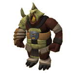
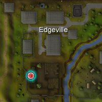

")
Krieg der Seelen
Einführung | Lage | Voraussetzungen | Empfohlene Ausrüstung
Kampf um Seelen | Gewinnen des Spiels | Belohnungen | Entwicklung
Kampf um Seelen | Gewinnen des Spiels | Belohnungen | Entwicklung
Nur RuneScape-Mitglieder können Krieg der Seelen spielen. Bitte werdet Mitglied, damit ihr auf dieses Feature zugreifen könnt.
Bitte beachtet, dass es sich hierbei um ein 'sicheres' Minispiel handelt. Falls ihr während des Minispiels sterbt, behaltet ihr alle eure Gegenstände.
Einführung

Weit im Westen, auf einer Insel, die lange vom Rest von RuneScape getrennt war, ringen zwei gewaltige Wesen um die Kontrolle über einen mächtigen Obelisken. Vor Kurzem entdeckte ein seltsamer Mann auf einer seltsameren Pilgerfahrt die Insel und hat das Schlachtfeld nun - nicht ohne Hintergedanken - für alle eröffnet, die sich mit den kleineren Wesen der Insel, anderen Abenteurern oder sogar den mächtigen Avataren selbst messen möchten...
Lage

Voraussetzungen
Für die Teilnahme am Krieg der Seelen gibt es keine besonderen Voraussetzungen, aber gute Kampffähigkeiten und reichlich Erfahrung in Berserker wären von großem Vorteil.
Empfohlene Ausrüstung
Ihr könnt keine Umhänge, Nahrungsmittel oder sonstige Gegenstände, die nicht für den Kampf nötig sind, in das Minispiel mitnehmen, solltet aber auf Kämpfe vorbereitet sein. Tränke und Vertraute sind erlaubt und werden mit Sicherheit außerordentlich nützlich sein, wenn das Gefecht tobt.
Kampf um Seelen
Wenn ihr zum ersten Mal auf der Insel ankommt, werdet ihr Nomad und seinem Kobold-Vertrauten begegnen. Nomad wird euch eine kurze Vorführung des Schlachtfeldes mit Erklärungen anbieten oder euch ein Buch überlassen, das die Grundlagen des Kriegs der Seelen erläutert.
Wenn ihr euch bereit fühlt, der Schlacht beizutreten, schreitet durch eins der Portale südlich von Nomad. Das blaue Portal stellt euch auf die Seite des Schöpfungsavatars, mit dem roten Portal tretet ihr dem Gefolge des Zerstörungsavatars bei. Das grüne Portal teilt euch automatisch der Mannschaft zu, die weniger Spieler hat.
Es kann auf jeder Welt nur ein Spiel gleichzeitig gespielt werden, aber theoretisch kann jeder einzelne Spieler auf der Welt daran teilnehmen. Eine Partie dauert zwanzig Minuten mit einer Pause von wenigstens drei Minuten zwischen den Runden, also müsst ihr möglicherweise auf das Ende eines Spiels warten, bevor ihr beitreten könnt. Wenn ihr unbedingt mitspielen wollt, könnt ihr aber einfach eins der Portale betreten - einmal pro Minute werden der Schlacht neue Spieler hinzugefügt, solange die Anzahl an Spielern zwischen den Mannschaften ausgeglichen bleibt.

| Schöpfungsavatar | Zerstörungsavatar | ||
| Seelen-Obelisk | Friedhöfe |
Das Schlachtfeld teilt sich in drei Gebiete auf:
- Die Basis des Schöpfungsavatars
Spieler der blauen Mannschaft starten hier. Keiner der Orte in diesem Gebiet kann von der roten Mannschaft erobert werden. - Die Basis des Zerstörungsavatars
Spieler der roten Mannschaft starten hier. Keiner der Orte in diesem Gebiet kann von der blauen Mannschaft erobert werden. - Das Schlachtfeld
Hier gibt es einige besondere Orte, von denen der Seelen-Obelisk und die beiden Friedhöfe sehr wichtig sind. Diese können von jeder Mannschaft erobert werden, indem sie eine kurze Zeit lang mehr Spieler als der Gegner in dem Gebiet platziert. In den Ruinen auf dem Schlachtfeld wandern außerdem Wackelpeter und Feuerteufel herum.
Die Basis selbst hat drei Besonderheiten: der Avatar, ein Materiallager und der Hauptfriedhof der Mannschaft. Der Avatar kann seinen Raum nicht verlassen, aber eure Gegner können ihn betreten, um die Bestie - auf eigene Gefahr natürlich - anzugreifen. Das Materiallager enthält Verbandszeug, mit dem ihr euch selbst und eure Kameraden heilen könnt, Barrikaden und Sprengstoff (hierzu mehr unten unter 'Materiallager'). Auf dem Friedhof werden Spieler eurer Mannschaft wiederbelebt, wenn sie im Lauf des Spiels sterben (genauere Informationen dazu unten im Abschnitt über Friedhöfe).
Das Ziel des Kriegs der Seelen ist es, den Avatar eurer Gegner innerhalb der 20-minütigen Runde so oft wie möglich zu besiegen. Die Avatare beginnen jede Schlacht mit einer Stufe von 100 - um sie anzugreifen, müsst ihr eine höhere Stufe in Berserker haben als dies. Das heißt, dass zu Beginn der Schlacht niemand die Avatare angreifen kann, da Fertigkeitsumhänge im Gefecht nicht erlaubt sind. Um die Stufe der Avatare zu senken, müsst ihr einige der kleineren Berserker-Monster besiegen, die auf dem Schlachtfeld herumwandern, ihre Seelen-Fragmente einsammeln und sie am Seelen-Obelisk opfern. Hierzu muss eure Mannschaft die Kontrolle über den Obelisken haben.

Die zwei Grab-Symbole und das Obelisken-Symbol zeigen an, wer die Kontrolle über die Friedhöfe und den Seelen-Obelisk hat.
Die Informationen rechts davon zeigen euch den momentanen Status der Avatare an und wieviel Zeit in der momentanen Partie noch verbleibt.
Der Balken oben rechts zeigt an, wie sehr ihr euch an der Partie beteiligt habt. Nach zwei Minuten Inaktivität leert sich der Balken langsam. Falls der Balken komplett leer wird, werdet ihr aus der Partie teleportiert. Um den Balken wieder aufzuladen, müsst ihr euch aktiv an der Partie beteiligen.
Die Avatare besiegen
 Um den Avatar eurer Gegner zu besiegen, müsst ihr ihn erst schwächen, damit möglichst viele eurer Kameraden ihn angreifen können. Wie oben bereits erwähnt, könnt ihr dies erreichen, indem ihr die Wackelpeter und Feuerteufel auf dem Schlachtfeld besiegt und die Seelen-Fragmente, die sie fallen lassen, am Seelen-Obelisk opfert. Je mehr Fragmente ihr opfert, desto weiter wird die Stufe des gegnerischen Avatars gesenkt. Die momentane Stufe wird euch rechts oben unter 'Avatar-Stufe' angezeigt.
Um den Avatar eurer Gegner zu besiegen, müsst ihr ihn erst schwächen, damit möglichst viele eurer Kameraden ihn angreifen können. Wie oben bereits erwähnt, könnt ihr dies erreichen, indem ihr die Wackelpeter und Feuerteufel auf dem Schlachtfeld besiegt und die Seelen-Fragmente, die sie fallen lassen, am Seelen-Obelisk opfert. Je mehr Fragmente ihr opfert, desto weiter wird die Stufe des gegnerischen Avatars gesenkt. Die momentane Stufe wird euch rechts oben unter 'Avatar-Stufe' angezeigt. Ihr könnt die Stufe eures Avatars wieder erhöhen, indem ihr auf einem Friedhof unter eurer Kontrolle die Knochen eurer besiegten Feinde begrabt. Jedes Mal, wenn ihr dies tut, besteht die Chance, dass die Stufe eures Avatars wieder etwas ansteigt - bis auf ein Maximum von 100 natürlich.
Als würde das alles noch nicht ausreichen, haben die Avatare auch noch eine Kampfstufe von 525 und sollten also nicht unterschätzt werden.
Bitte beachtet, dass Vertraute den Avataren nichts anhaben können - aber sie sind dennoch nützlich, um die kleineren Monster und andere Spieler zu besiegen.
Tod und Friedhöfe
Wenn ihr im Krieg der Seelen besiegt werdet, wird Nomad euch vor dem Hunger des Seelen-Obelisken beschützen und sicherstellen, dass ihr auf dem nächstgelegenen Friedhof unter der Kontrolle eurer Mannschaft wiederbelebt werdet. Ihr werdet einen Moment lang eine körperlose Form haben und nicht mit eurer Umgebung interagieren können, aber ihr werdet bald eure normale Gestalt und eure Ausrüstung zurück bekommen.Da man die Kontrolle über die beiden Friedhöfe auf dem Schlachtfeld übernehmen kann, sind sie besonders wertvolle Ressourcen - sie verschaffen eurer Mannschaft einfacheren Zugang zu den Berserker-Monstern, dem Seelen-Obelisken und der Basis eurer Feinde.
Materiallager
Das Materiallager in eurer Basis enthält Verbandszeug, Barrikaden und Brandbomben - drei nützliche Gegenstände, mit denen ihr die Schlacht für euch entscheiden könnt. Ihr könnt in 'Krieg der Seelen' nicht handeln, aber ihr könnt Verbandszeug mit euren Kameraden benutzen, um einige ihrer Trefferpunkte wiederherzustellen. Genauso könnt ihr sie natürlich auch mit euch selbst benutzen. Ihr könnt beliebig viel Verbandszeug tragen, so lange ihr Platz im Inventar habt.
Ihr könnt in 'Krieg der Seelen' nicht handeln, aber ihr könnt Verbandszeug mit euren Kameraden benutzen, um einige ihrer Trefferpunkte wiederherzustellen. Genauso könnt ihr sie natürlich auch mit euch selbst benutzen. Ihr könnt beliebig viel Verbandszeug tragen, so lange ihr Platz im Inventar habt.  Zusätzlich zum Verbandszeug befindet sich im Materiallager auch ein Tisch voller Barrikaden. Jeder Spieler kann nur eine Barrikade gleichzeitig tragen und jede Mannschaft kann maximal zehn Barrikaden gleichzeitig auf dem Schlachtfeld haben. Barrikaden könnt ihr aufstellen, um den Fortschritt eurer Gegner zu verlangsamen, indem ihr sie einfach in eurem Inventar linksklickt. Wenn euch eine Barrikade den Weg versperrt, könnt ihr sie angreifen oder mit Brandbomben zerstören.
Zusätzlich zum Verbandszeug befindet sich im Materiallager auch ein Tisch voller Barrikaden. Jeder Spieler kann nur eine Barrikade gleichzeitig tragen und jede Mannschaft kann maximal zehn Barrikaden gleichzeitig auf dem Schlachtfeld haben. Barrikaden könnt ihr aufstellen, um den Fortschritt eurer Gegner zu verlangsamen, indem ihr sie einfach in eurem Inventar linksklickt. Wenn euch eine Barrikade den Weg versperrt, könnt ihr sie angreifen oder mit Brandbomben zerstören.  Brandbomben könnt ihr mit Barrikaden benutzen, um sie in einem einzigen Angriff zu zerstören. Ihr könnt so viele Brandbomben tragen, wie ihr Platz im Inventar habt.
Brandbomben könnt ihr mit Barrikaden benutzen, um sie in einem einzigen Angriff zu zerstören. Ihr könnt so viele Brandbomben tragen, wie ihr Platz im Inventar habt.
Das Spiel gewinnen
Die Mannschaft, die den Avatar ihrer Gegner öfter besiegt, gewinnt das Spiel. Jedes nicht eindeutige Ergebnis wird zu einem Unentschieden erklärt.
Belohnungen
Abhängig vom Ergebnis erhaltet ihr nach der Schlacht 'Fleißpunkte' - drei für einen Sieg, zwei für ein Unentschieden und einen für eine Niederlage. Ihr könnt diese bei Nomad (oder Zimberfizz, falls ihr Nomads Requiem bereits abgeschlossen habt) für verschiedene Belohnungen eintauschen:
- Erfahrung
Ihr könnt Erfahrungspunkte in Angriff, Stärke, Verteidigung, Lebenspunkte, Fernkampf, Magie, Gebet oder Berserker erhalten. Der Wert eines Fleißpunktes hängt hierbei von eurer Stufe in der jeweiligen Fertigkeit ab. - Siegel
Beschwörungssiegel sind in allen Farben verfügbar. Die Anzahl, die ihr für jeden Fleißpunkt erhaltet, hängt von euren Kampffertigkeiten ab. - Sonstiges
Die meisten Möglichkeiten hier sind neue Haustiere für Berserker, die aus den Überresten besiegter Gegner wiederbelebt werden. Wenn ihr eine ausgestopfte oder frische Trophäe einer kriechenden Hand, einer Cockatrise, eines Basilisken, eines Kurasken oder eines Höllendämons mitbringt, wird euch Nomad ein entsprechendes Haustier aushändigen. Weitere Informationen hierzu bekommt ihr unter Beschwörung - Haustiere. Ihr könnt außerdem 'Zocken!'. Diese Option wird euch eine zufällig ausgewählte Belohnung einbringen. Es gibt eine große Anzahl an möglichen Belohnungen, aber ihr wisst vorher nicht, was genau ihr bekommt.
Entwicklung
Entwickler: Chris E, Chris L
Grafik: Matthew M, Alex R, Matthew N, Daniel J, Mark C, Giuseppe G, Kavi M, Paul B, Wing C
QA: Vicki M, Ian H, Andrew E
Audio: Grace D

Weitere Artikel in Minispiele
|
|
|
Weiterführende Informationen Wenn euch dieser Artikel nicht weitergeholfen hat, könnt ihr in den folgenden Kapiteln der RuneScape-Webseite mehr Informationen finden:
|
|